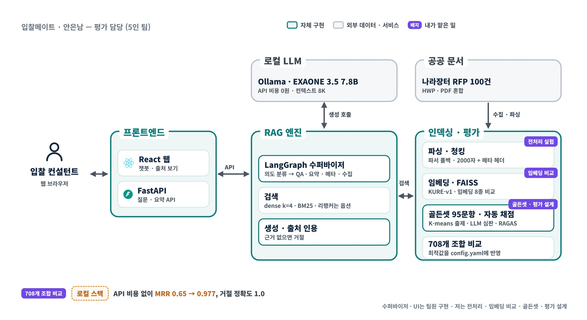

입찰메이트 · 공공 RFP 문서 RAG 질의응답
수십 쪽짜리 HWP와 PDF가 섞인 공공 RFP에서 입찰 담당자가 답의 근거를 바로 확인할 수 있게, 출처를 달아 답하고 문서로 답할 수 없는 질문은 거절하는 챗봇입니다. 외부 API 없이 로컬 모델로만 동작합니다.
내가 맡은 일
- 역할
- 평가 담당
- 기간
- 2026.06 – 2026.07
- 팀
- 5인 팀 · 코드잇 스프린트 팀 프로젝트
골든셋
K-means로 대표 문서를 골라 50건을 만들고, 5개 유형 95문항(19개 RFP)으로 확장
전처리 실험
표와 서식이 뒤섞인 HWP·PDF의 파싱과 청킹 48개 조합을 비교하는 실험 코드
평가
RAGAS 평가 설계, 문항 유형별 자동 채점기, 임베딩 비교와 KURE-v1 전환
추천 API
회사 프로필에 맞는 공고를 고르는 규칙 기반 추천 API(FastAPI, src/recommender.py)
성과
화면

시스템 구조
인덱싱, 서빙, 평가 루프로 나눈 구조

보라색 배지가 제가 맡은 부분입니다. 이미지를 누르면 크게 볼 수 있습니다.
구조 결정
1. 점수가 멈추면 측정부터 의심한다
왜: Hit@k가 0.3에서 오래 멈춰 있었고, 모델과 설정만 바꿔서는 오르지 않았습니다.
바꾼 구조: 틀린 문항을 하나씩 열어 보니 검색은 맞는 문서를 가져오고 있었고, 제가 만든 골든셋의 정답 파일명이 잘못되어 있었습니다.
결과: 골든셋을 바로잡자 1.0이 되었습니다. 이후로는 점수가 이상하면 틀린 문항부터 직접 엽니다.
2. 근거 수보다 입력 창
왜: 근거를 4건에서 12건으로 늘리자 5개 유형 평균 점수가 81.9점에서 40.7점으로 떨어졌습니다.
바꾼 구조: 변수를 하나씩 바꿔 보니 근거가 모델 입력 창(4,096토큰)을 넘어 잘리고 있었습니다. 같은 설정에서 k=4, 8, 12가 81.9, 46.1, 40.7점이었습니다.
결과: 근거 4건과 8,192토큰 입력 창으로 확정해 같은 조건 비교에서 82.8점을 얻었습니다.
3. 외부 API 없이 로컬 스택으로
왜: 공공 문서를 다루는 만큼 외부 API 없이 돌아가야 했고, 비용도 줄여야 했습니다.
바꾼 구조: OpenAI 대신 KURE-v1 임베딩과 EXAONE 3.5를 GCP VM의 Ollama로 돌렸습니다.
결과: 평균 3.6초에 답하고 외부 API 비용은 0원입니다. 효과 없이 응답만 21초 늦추던 리랭커는 뺐습니다.
한계
설정 선택과 평가에 같은 95문항 골든셋을 썼기 때문에, 처음 보는 질문에서는 점수가 더 낮을 수 있습니다. 독립 시험셋으로 다시 재는 것이 다음 과제입니다.